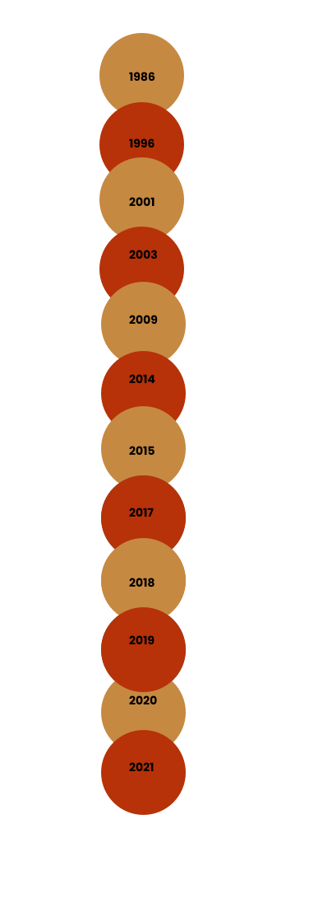

Vidéo
Autres Projets
If you like our work, we advise you to follow our colleagues' work we are grateful for your visit.
"Woman in better" dealing with feminism in art directed by SATURNI Loris "Education and Girls from; contrary to complementary" dealing with Feminism and Education directed by MEN Ilkay "Be witchy" dealing with Witches and feminists directed by SARKISSIAN David "Le combat des femmes à travers les âges" dealing with Le combat des femmes à travers les âges directed by PAQUIER Thomas "Feminism in Politics & Literature" dealing with the Glory of Women directed by TRESSE Paul
Timeline
Metroid Samus Aran 1986
Tomb Raider lara croft
Lara Croft : Tomb Raider
Lara Croft : Tomb Raider, le berceau de la vie
Catwoman
Bayonetta
Street Fighter : Legend of Chun-Li
Maléfique
Supergirl
Marvel : Agent Carter
Wonder Woman
Tomb Raider
Tomb Raider lara croft (jeu)
Bayonetta
Maléfique : Le Pouvoir du mal
Captain Marvel
Batwoman
Mulan
Terminator : Dark Fate
Wonder Woman 1984
Wanda Vision
Black Widow
GLOSSAIRE :
Article 1 : Les femmes et les comics :
Pop culture : The term Pop Culture is back in the spotlight. All news sites dedicated to cinema, video games, geek culture, web culture etc. are now described as sites dedicated to Pop Culture Feminism : A movement advocating for the improvement and expansion of the role and rights of women in society. Publishing houses :: A publishing house is a company or association whose original main activity is the production and distribution of books or formatted documents. Archétypes : The original or ideal model on which a work is made. humanity : All the characteristics by which a living being belongs to the human species, or is distinguished from other animal species precursor :Person who, by his action, has more or less prepared the way for a doctrine, a movement or who has anticipated the exposition of a theory. Inheritance : What we take from predecessors, from previous generations, in terms of character, ideology, etc.
Article 2 : Gal Gadot :
#MeeToo : : A social movement encouraging women to speak out to make rape and sexual assault known #SeeHer : An award given to women at the Critics' Choice Movie Awards for their feminist actions to change things. Associations : A group of people who join together for a specific purpose Stéréotypes : : An expression or opinion that is ready-made, without any originality, a cliché.
Article 3 : Oeuvre :
Facets : Each of the various aspects presented by someone or something porosity : State of a poorly protected border, which can be crossed illegally at various points Illustrations :All the engravings, drawings, reproductions, etc., documentary or artistic, added to the text of a work Universally : Universally, by everyone